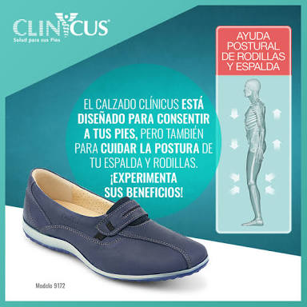

Podología San Juan
Con mas de 18 años de experiencia, nos dedicamos a prevenir, proteger y orientarte en el cuidado de tus pies con una visión integral, actualizada, ética, en conjunto con otras especialidades médicas y con énfasis en los pacientes que viven con diabetes.
Dr. Efraín García Alva
Quienes somos
Podología preventiva
Dedicado a educar, prevenir, y tratar al paciente con diabetes, con una vision integral, actualizada, etica, en conjunto con otras especialidades médicas, con énfasis en el pie de riesgo.
Nuestros productos
La comodidad no tiene que estar peleada con el diseño. Prueba nuestros productos para consentir tus pies.
CatalogoVisítanos
Calzada San Juan de Aragón 426 Constitución de la República 07469 Ciudad de México, México
Contáctanos
Horarios de atención
lun- vie.: 11:00–20:00
sáb.: 8:00–18:00
dom.: 8:00–15:00